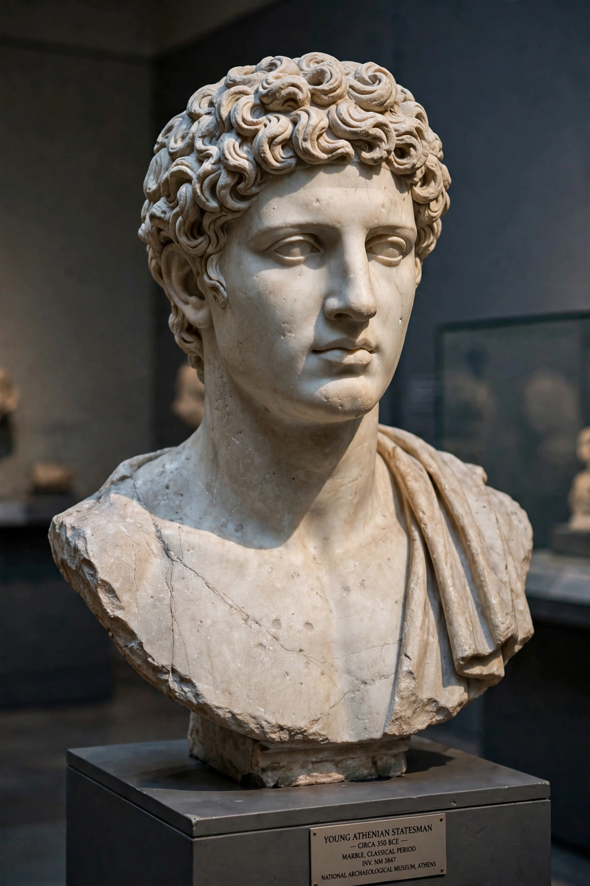

Alcibiades (Greek: Ἀλκιβιάδης; c. 450 – 404 BC) was an Athenian statesman, orator, and general, the last great member of the aristocratic Alcmaeonid family, which fell from prominence after the Peloponnesian War. A ward of Pericles and a companion of Socrates, he was brilliant, wealthy, flamboyant, and notoriously unprincipled: he changed allegiance from Athens to Sparta and then to Persia before returning to Athenian service, playing a decisive role in the war's final decade. His career is the classic case of talent undermined by ambition and distrust.
| Alcibiades | |
|---|---|
 Bust of Alcibiades. | |
| Born | c. 450 BC, Athens |
| Died | 404 BC, Phrygia, Achaemenid Empire |
| Allegiance | Athens; Sparta; Persia (successively) |
| Rank | Strategos |
| Relations | Pericles (guardian); Socrates (companion) |
Alcibiades's father Cleinias was killed at the Battle of Coronea (447 BC), and the boy was raised in the household of Pericles. Plato depicts the young Alcibiades in dialogue with Socrates, who foresaw both his gifts and his ruinous ambition; at Potidaea (432 BC) Socrates saved his life, and Alcibiades returned the favour at Delium. He entered politics as a leader of the imperial, anti-Spartan party, sabotaging the Peace of Nicias in 421 BC by tricking Spartan ambassadors.
Alcibiades was the chief advocate of the expedition against Syracuse in 415 BC. On the eve of departure, the mutilation of the herms — sacred statues across Athens — was blamed on his circle, and after sailing he was recalled to stand trial for impiety. He escaped custody at Thurii and defected to Sparta, where he gave the Spartans devastating advice: send Gylippus to Syracuse and fortify Decelea in Attica. Alcibiades later said that a true patriot should not hesitate to attack his own city if unjustly exiled, in order to regain it.
Falling out with the Spartan king Agis (whose wife he was rumoured to have seduced), Alcibiades fled to the Persian satrap Tissaphernes in 412 BC and played Athens and Sparta against each other. Operating from Samos he engineered his recall by the Athenian fleet, and as elected general he won the brilliant naval victories of Abydos and Cyzicus (411 BC) and recovered Byzantium, returning to Athens in triumph in 407 BC. After the minor defeat of Notium (406 BC), where his helmsman disobeyed orders, he was not re-elected and withdrew to Thrace.
After the Spartan victory at Aegospotami (405 BC), Alcibiades sought refuge with the Persian satrap Pharnabazus, but at Spartan insistence he was assassinated in 404 BC — his house surrounded and set on fire, and cut down as he fled. His career is recounted by Thucydides, Xenophon, and Plutarch, whose Life pairs him with Coriolanus.